Free · No accounts · Works offline
A pocket toolkit for league players. Work out your real odds before a match, measure how hard you actually break, rate the table you're stuck on, and log matches so you can see the skill level you're really playing at.
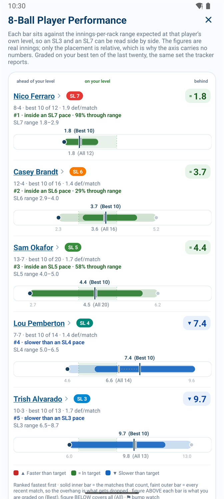
Pool Captain is finished enough to use in a real match, and now it has to get through Google's closed-testing requirement before it can go on the Play Store.
Google requires 12 testers who stay opted in for 14 consecutive days before an app from a new personal developer account can be published. That's the whole reason this page exists. You install it, use it on league night, and tell me what broke or annoyed you.
Four are calculators you use before or during a match. Three are logs that build up a picture over a season. Everything below is a real screenshot of the current build.
Set both skill levels and the app fills in everything else: the Fargo range that level covers, and the race each player is on from the Equalizer chart. Then it counts every way the match can end.
Useful for captains deciding a lineup, and for working out whether a mismatch on paper is really as lopsided as it looks.
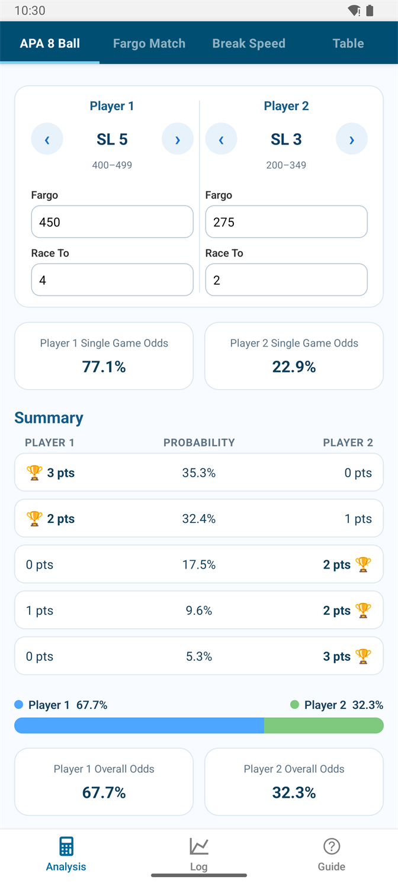
The same odds engine, driven straight off two Fargo ratings, with race lengths you set yourself — anything up to a race to 50. Built for tournament brackets, gambling sets, and any league that handicaps on Fargo instead of APA skill levels.
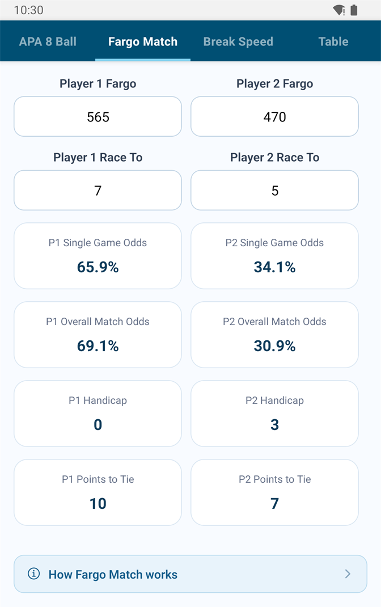
You don't need a radar gun to know how hard you break. You need the distance the cue ball travelled and the time it took. Pool Captain gets the distance from the table and the time from the two cracks your break makes: the tip hitting the cue ball, and the cue ball hitting the rack.
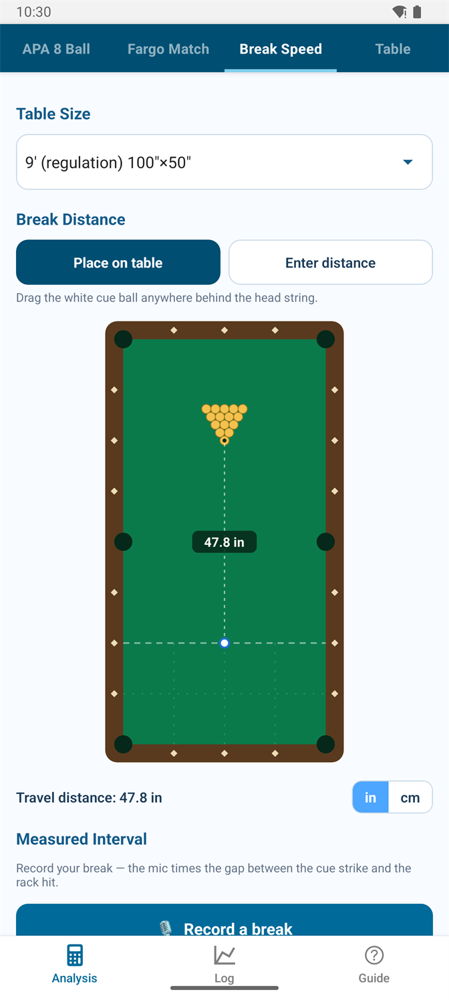
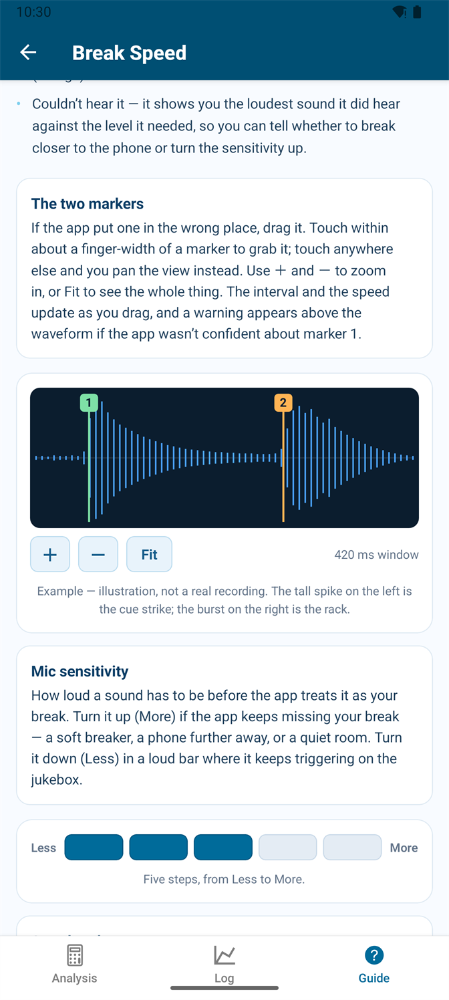
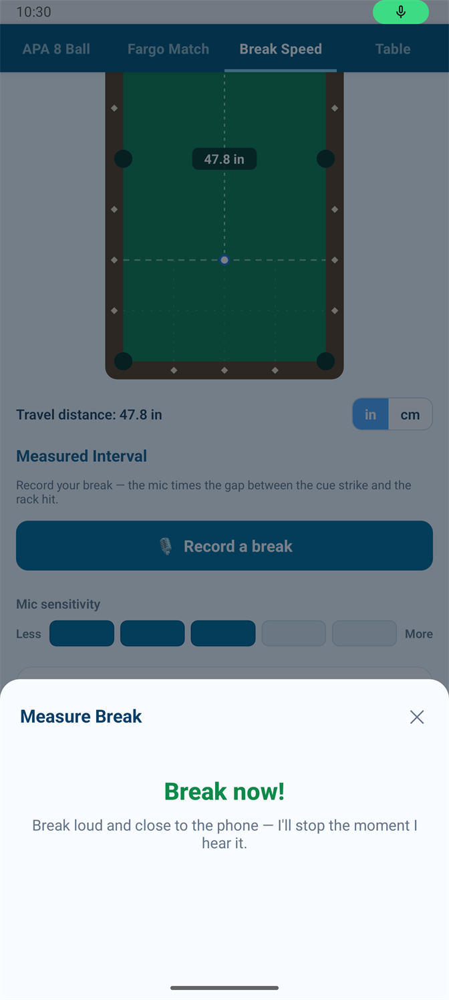
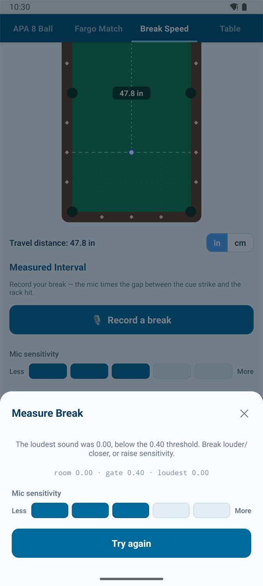
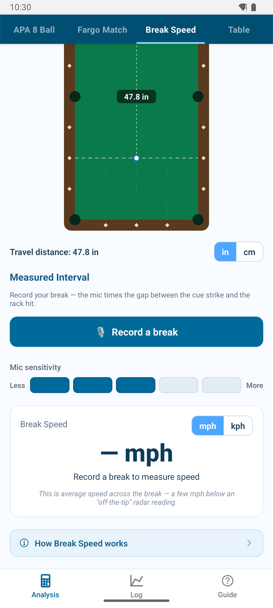
Every measured break can be saved, and the log turns them into a trend instead of a number you forget by next Tuesday.
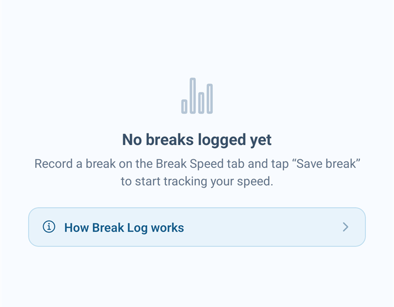
A 0.90 bar box and a 1.20 tournament table are not the same game, and your percentages shouldn't be compared as if they were. This rates the table in front of you using Dr. Dave Alciatore's Table Difficulty Factor, from four measurements you can take with a tape measure.
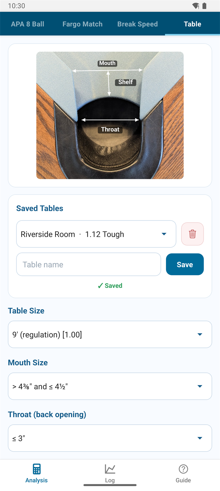
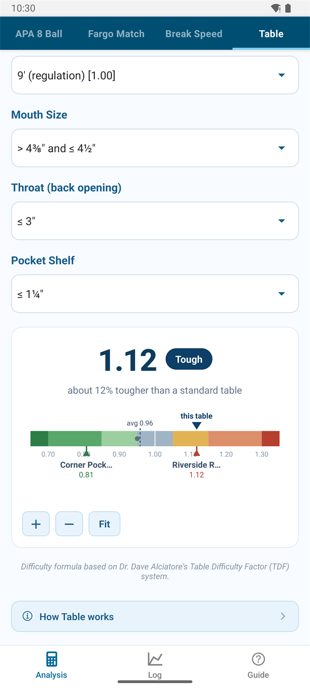
Your handicap is what the league assigned you. Your scoring pace is what you're actually doing. Log your matches and the app works out both, so you can see a bump coming instead of being surprised by it.
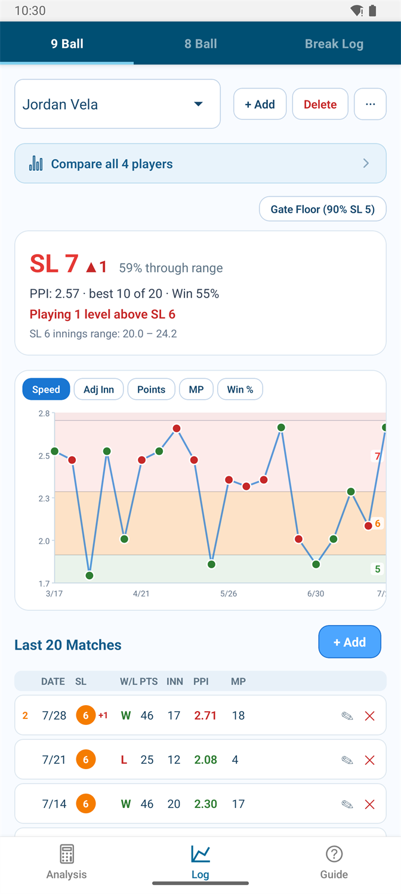
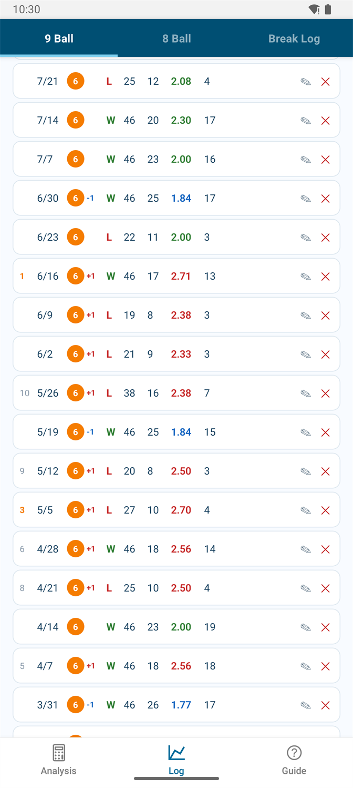
Once you're logging more than one player — a whole roster, if you're a captain — the comparison view ranks everybody against the pace expected at their own level.
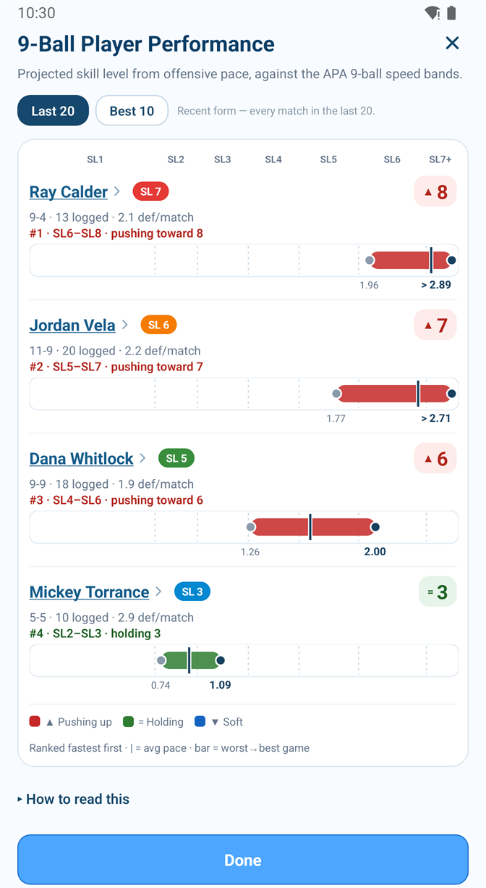
8-ball has no points, so pace means innings. The catch is that innings are shared between both players and the Equalizer gives everyone a different race, which is what makes a raw innings-per-win number so easy to misread. This handles both.
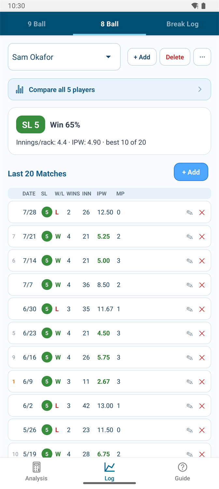
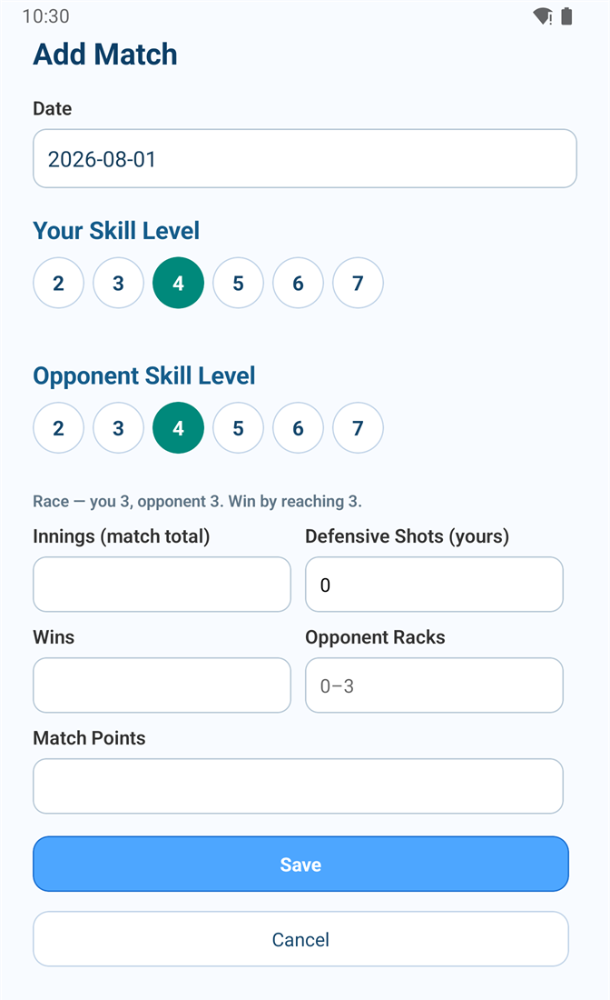
Every tool has a written guide, reachable from the bottom of the screen you're on. Each one covers what the controls do, then how the number is actually worked out — including where a figure is an estimate and where it's a rule straight out of the APA scoresheet.
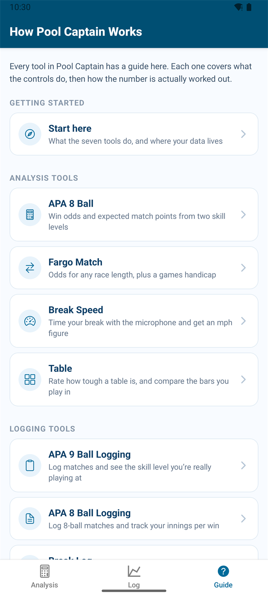
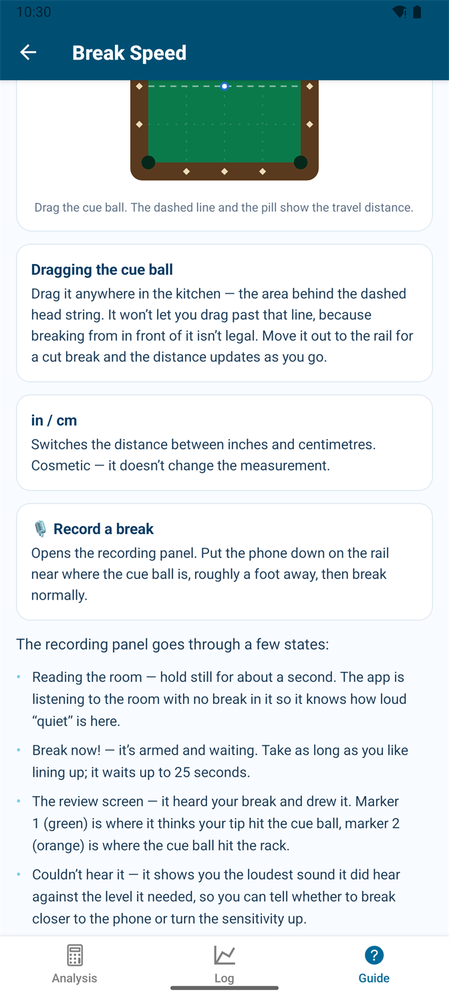
Short answer: on your phone, and nowhere else.
There's nothing to sign up for. The app makes no network requests of its own and works fully offline — try it in airplane mode. Your match logs, break history, and saved tables sit in the app's private storage on your device.
No advertising, no usage tracking, no crash reporting, no third-party SDKs collecting anything. I don't find out that you used it, let alone how.
Used only on the break-speed screen, only while it's listening. Audio is analysed in memory to find the timing of two impacts. No recording is saved or transmitted — what persists is a number.
Both match logs can be exported as a plain JSON file through the share sheet, and restored on another phone. It's your data, in a format you can read.
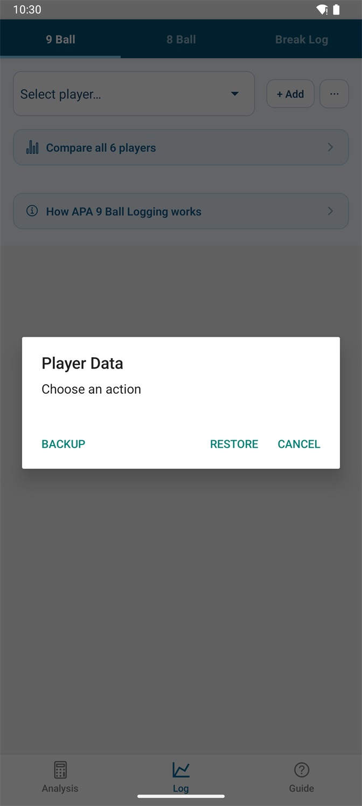
The full policy is here: Pool Captain privacy policy.
That's the point of a test. Expect rough edges. Two known ones: a chart label can clip at the right edge of the break trend, and restoring a backup file into the wrong tracker will fill it with nonsense rather than refusing.
The APA race charts and 9-ball point requirements are transcribed from APA's own materials. The skill-level bands the comparison screens grade you against are calibrated estimates worked out from match data — they are not published APA figures, and the guide is explicit about which is which.
Every name and match on this page is fabricated for illustration. The numbers are internally consistent — they were generated to be a plausible logbook and then run through the app's own calculations — but nobody's real record is shown anywhere here.
Pool Captain is an independent app, not affiliated with, endorsed by, or sponsored by the American Poolplayers Association, Fargo Rate, or any league operator. It's one person's side project.
Send me the Google account email on your Android phone and I'll add you to the tester list. If you'd rather ask questions first, that's fine too — tell me what you play and what you'd want out of it.